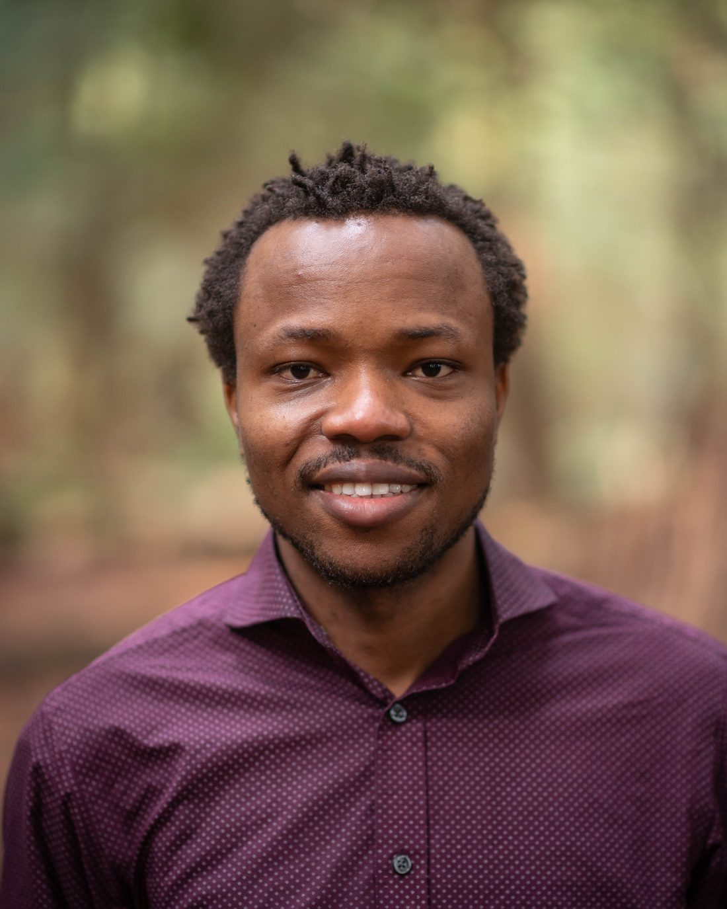
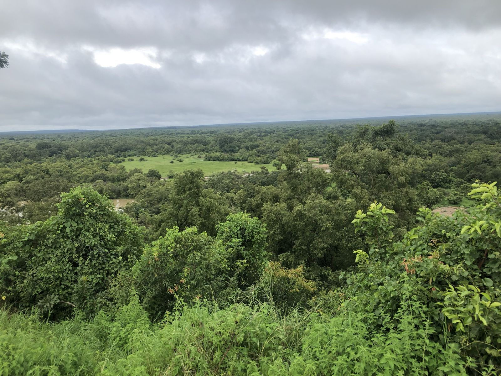
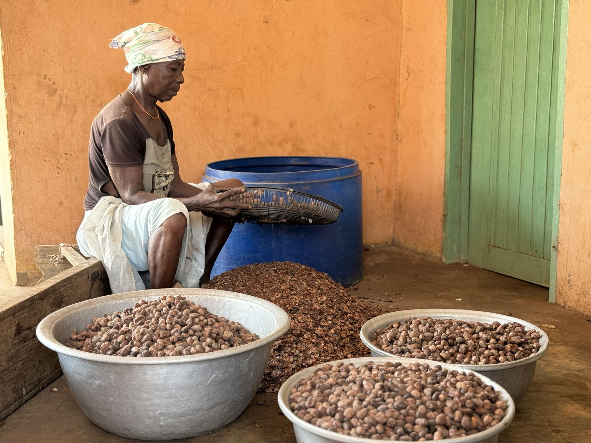

Postdoctoral ResearcherDepartment of Geography, McGill University
Samuel Adeyanju, PhD
I research who benefits, and who is left out, when conservation and climate projects come to rural communities.
A human-environment social scientist working on community-based conservation, rural livelihoods, and carbon markets in Ghana and Nigeria. I am part of the Ecosystem Policy & People research group led by Dr. Brian E. Robinson.

Research
From sacred groves to carbon markets

Do carbon market social safeguards hold up in practice?
Comparing what forest carbon projects in West Africa promise communities with what independent audits find.

Livelihood interventions in Ghana’s community resource areas
Who benefits from community conservation programs, with a focus on women in the shea value chain.

Sacred groves and biodiversity in Nigeria
How customary institutions and state management together protect sacred forests.
Vanier Scholar/Killam Scholar/Mastercard Foundation Scholar
Publications
Recent work
- 2026Environmental, economic, and sociocultural outcomes of Community Resource Management Areas (CREMA) in Ghana: A systematic reviewFrontiers in Forests and Global Change
- 2026Evaluating socioeconomic and equity outcomes in livelihood interventions: Insights from CREMAs in northern GhanaCurrent Research in Environmental Sustainability
- 2026
Talks
Recently presented
 National Sustainability Society, 2025Notre Dame · Shea value chain findings
National Sustainability Society, 2025Notre Dame · Shea value chain findings ICCB 2025Brisbane · Livelihood interventions in CREMAs
ICCB 2025Brisbane · Livelihood interventions in CREMAs IUFRO World Congress, 2024Stockholm · Two poster presentations
IUFRO World Congress, 2024Stockholm · Two poster presentations
Contact
Get in touch
I welcome conversations about research collaboration, impact evaluation, and safeguards work with conservation and climate organizations.
samuel.adeyanju@mcgill.ca